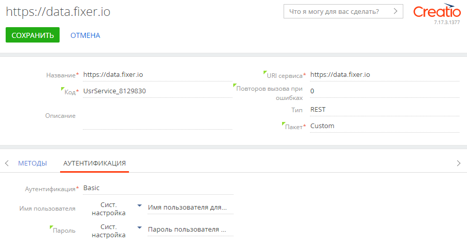
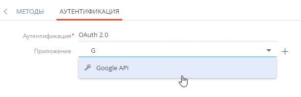
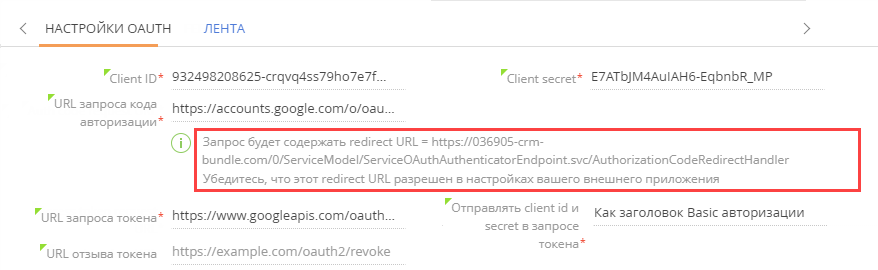

В зависимости от особенностей веб-сервиса, прежде чем он станет доступным для использования, может потребоваться выполнить процедуру аутентификации. При интеграции Creatio с веб-сервисами поддерживается два типа аутентификации:
-
Аутентификация OAuth 2.0 — безопасный способ аутентификации, поддерживается большинством популярных провайдеров, включая Facebook, Google и Amazon.
-
Базовая HTTP-аутентификация — заключается в передаче логина и пароля в рамках вызова веб-сервиса. Выполняется с целью проверки учетных данных, переданных из Creatio в ходе интеграции с веб-сервисом. Это более простая форма аутентификации, но менее надежная.
Настроить базовую аутентификацию
Для включения базовой аутентификации:
-
Получите учетные данные для выполнения базовой аутентификации. Способ получения зависит от специфики интегрируемого веб-сервиса.
-
Перейдите в раздел Системные настройки и добавьте следующие системные настройки:
-
Системную настройку типа “Строка” для хранения логина доступа в веб-сервис.
-
Системную настройку типа “Зашифрованная строка” для хранения пароля доступа в веб-сервис.
Системные настройки, используемые в процессе аутентификации, привязываются к пакету с настройками интеграции веб-сервиса.
-
-
В качестве значений системных настроек укажите логин и пароль для аутентификации в веб-сервисе.
-
Откройте страницу веб-сервиса и перейдите на вкладку Аутентификация.
-
В поле Аутентификация укажите “Basic”.
-
В полях Имя пользователя и Пароль выберите системные настройки, содержащие логин и пароль доступа к веб-сервису (Рис. 1).
Рис. 1— Вкладка Аутентификация страницы веб-сервиса - Примените изменения по кнопке Сохранить.
Настроить OAuth-аутентификацию
Настроить интеграцию с существующим приложением OAuth 2.0
Для выполнения OAuth-аутентификации при условии, что приложение было настроено ранее (например, при установке пакета с настройками интеграции с веб-сервисом):
-
Перейдите в рабочее место Студия —> Веб-сервисы. Откройте страницу веб-сервиса и перейдите на вкладку Аутентификация.
-
В поле Аутентификация выберите “OAuth 2.0”.
-
В поле Приложение выберите предварительно настроенное OAuth-приложение (Рис. 2).
Рис. 2 — Выбор ранее настроенного OAuth-приложения - Примените изменения по кнопке Сохранить.
Настроить новое приложение OAuth 2.0
Для настройки нового OAuth-приложения и выполнения аутентификации с веб-сервисом:
-
Перейдите в рабочее место Студия —> Веб-сервисы. Откройте страницу веб-сервиса и перейдите на вкладку Аутентификация.
-
В поле Аутентификация выберите “OAuth 2.0”.
-
В поле Приложение нажмите + (Рис. 3).
Заполните страницу настройки OAuth-приложения (Рис. 4). Необходимые значения параметров обычно можно найти в документации веб-сервиса или получить через API такого веб-сервиса. Например, данные для доступа к Google API можно найти в разделе Учетные данные консоли разработчика Google, а также в документации API.
Ниже приведены общие рекомендации по заполнению параметров настройки OAuth, а также подсказки, как получить значения таких параметров:
-
Название — укажите название нового приложения. Название отобразится на вкладке Аутентификация в поле Приложение. Также можно выбрать изображение, которое будет использоваться как иконка этого OAuth-приложения.
-
Client ID — укажите идентификатор клиента, выданный сервером авторизации интегрированного веб-сервиса. В документации и в API разных веб-сервисов идентификатор клиента также может называться:
- Application (идентификатор приложения).
- Consumer ID (идентификатор заказчика).
- Public key (публичный ключ).
-
Client secret — укажите секретный ключ, предоставленный сервером авторизации. Также в документации и в API разных веб-сервисов секретный ключ может называться:
- Application secret (секретный ключ приложения).
- Consumer secret.
- Secret key.
- URL запроса кода авторизации — укажите URL, который будет служить конечной точкой (endpoint) для запроса доступа у пользователя, который его может предоставить. Например, когда Google информирует вас, что приложение пытается получить доступ к определенным данным, вы выступаете в роли “пользователя, который может предоставить доступ”.
Указанный URL является значением параметра вызова auth_url. Подробнее читайте в документации по IETF Tools (на английском языке). Например, URL запроса кода авторизации для Google API — “https://accounts.google.com/o/oauth2/auth”. Его можно найти в документации, описывающей пример интеграции OAuth-приложения с Google. Также URL доступен в JSON-файле с настройками, который можно загрузить в разделе “Учетные данные” консоли разработчика Google.
- URL запроса токена — укажите URL-адрес, который будет использоваться в качестве конечной точки (endpoint) для запроса токена доступа при вызове веб-сервиса. Подробнее читайте в документации по IETF Tools (на английском языке). Например, URL запроса токена для Google API — “https://www.googleapis.com/oauth2/v3/token”. Его можно найти в документации, описывающей пример интеграции OAuth-приложения с Google. Также URL доступен в JSON-файле с настройками, который можно загрузить в разделе “Учетные данные” консоли разработчика Google.
- Redirect URL — укажите URL-адрес, по которому сервер аутентификации будет перенаправлять пользователей после выполнения аутентификации. “Redirect URL” отображается на странице настройки OAuth-аутентификации (Рис. 5).
Рис. 5 — Redirect URL на странице настройки OAuth-аутентификации в Creatio
Убедитесь, что в настройках интегрированного сервиса указан корректный URL-адрес для переадресации.
- Отправлять client id и secret в запросе токена — выберите часть запроса токена, которая будет содержать токен доступа. Авторизация предусматривает несколько способов передачи токена. В поле Отправлять client id и secret в запросе токена доступно для выбора несколько вариантов. Вариант передачи зависит от особенностей сторонней системы и обычно рассматривается в ее документации.
-
“В теле запроса”. Многие популярные сервисы, например, Google, Linkedin, JIRA и т. д. обрабатывают запросы, когда токен доступа передается в теле запроса. Например:
-
“В виде заголовка Basic-авторизации”. Некоторые сервисы, например, такие, как Docusign, GoToWebinar, требуют, чтобы идентификатор и секретный ключ клиента передавались в формате заголовка и не примут их в теле запроса. Подробнее читайте в документации IETF. Например:
-
“В параметрах GET-запроса”. Некоторые сервисы выполняют аутентификацию другим способом. Например, вместо POST-запроса с параметрами, содержащимися в теле и заголовках, Facebook использует GET-запрос токена со всеми параметрами в URL запроса. Например:
-
- URL отзыва токена — укажите URL, который будет использоваться в качестве конечной точки (endpoint) для отзыва токена доступа при отклонении соответствующих вызовов веб-сервиса. Поле не является обязательным для заполнения. Обычно пользователь, имеющий доступ к интегрированному веб-сервису, может отменить доступ к определенным приложениям OAuth. Например, вы можете ограничить доступ к определенным приложениям в настройках своей учетной записи Google: URL-адрес для запроса отзыва токена Google API — “https://accounts.google.com/o/oauth2/revoke”. Получить его можно в документации Google API.
- Авторизоваться — войдите в веб-сервис по этой кнопке, используя общие учетные данные, и разрешите доступ к стороннему приложению для Creatio.
- Разрешения (scopes) — настройте на детали разные уровни доступа приложения к данным от имени конечного пользователя. URL-адреса для указания на детали Разрешения (scopes) обычно доступны в документации веб-сервиса. Каждое API может объявлять одно или несколько разрешений. Например, разрешения Google API, в частности, “https://www.googleapis.com/auth/gmail.readonly” (разрешение на просмотр email-сообщений и настроек) доступны в документации API.
Поскольку в разных сервисах используется различная терминология, а также есть отличия в структуре API и документации, то настройка аутентификации также имеет свои особенности. Возможные проблемы настройки OAuth и способы их решения описаны далее.
Возможные проблемы настройки OAuth-приложений
Ниже рассмотрены типичные проблемы, с которыми может столкнуться пользователь при настройке интеграции с веб-сервисом с использованием аутентификации OAuth 2.0.
Указанные настройки соединения некорректны или неактуальны
Настройки отличаются от настроек соединения в интегрированном приложении. Ошибка может быть в значениях Client ID, Client secret, а также в URL запроса кода авторизации, URL запроса токена или в URL отзыва токена.
Ошибка может возникать в следующих случаях:
-
При добавлении пользователя на странице OAuth-приложения.
-
При вызове веб-сервиса.
Проверьте, что все поля на странице настройки OAuth-приложения заполнены корректно. Убедитесь, что указанные значения совпадают с соответствующими настройками во внешнем приложении. После этого попробуйте добавить нового пользователя повторно.
Во внешнем приложении указан некорректный адрес перенаправления (redirect URL)
Настройка OAuth-аутентификации выполняется на стороне Creatio и во внешнем приложении. По требованиям безопасности используется специальный адрес (redirect URL) для перенаправления пользователей после получения токена доступа от сервера аутентификации. Домен, на который выполняется перенаправление, часто требует отдельной проверки.
Ошибка может возникать при добавлении пользователя на странице OAuth-приложения.
Корректный redirect URL отображается на странице настройки OAuth-приложения в Creatio (Рис. 6).
Этот же URL-адрес необходимо скопировать в настройки внешнего приложения (Рис. 7).
Если ссылка во внешней системе не совпадает со ссылкой, указанной на странице настройки OAuth-приложения в Creatio, то токен доступа не будет получен.
Таким образом, для решения проблемы скопируйте корректную ссылку (redirect URL) со страницы настройки OAuth-приложения в Creatio и укажите ее в соответствующем поле в настройках внешнего приложения.
Недостаточно разрешений (scopes) на выполнение нужной операции
В OAuth 2.0 токен доступа часто выдается с определенными ограничениями к функциональности вызова внешнего приложения. Например, приложения могут требовать отдельные разрешения на чтение и изменение данных. В таком случае список необходимых разрешений необходимо указать в Creatio, во внешнем приложении или при авторизации пользователя.
В Creatio необходимые разрешения указываются на детали Разрешения (scopes) страницы настройки OAuth-приложения. Creatio будет запрашивать эти разрешения при выполнении пользователем OAuth-аутентификации. Если необходимое разрешение не было добавлено на деталь Разрешения (scopes), то, скорее всего, пользователь не сможет авторизоваться.
Ошибка может возникать, если при попытке вызвать веб-сервис, например, для изменения его данных, нет разрешения на изменение. В этом случае внешнее приложение выдаст ошибку доступа на изменение.
Для решения проблемы выполните следующее:
-
Добавьте нужный scope на деталь.
-
Удалите из Creatio пользователя веб-сервиса, чтобы ранее выданный токен доступа был отозван.
-
Отмените доступ к приложению Creatio в настройках веб-сервиса (например, вы можете отменить доступ к определенным приложениям в настройках своей учетной записи Google).
-
Добавьте пользователя повторно.
Разрешения в Creatio не совпадают с разрешениями в настройках веб-сервиса
Иногда разрешения (scopes) должны быть указаны в интегрированном приложении. Например, уровень доступа можно установить в процессе настройки приложения в интегрированном веб-сервисе. В этом случае разрешения в Creatio должны совпадать с разрешениями, установленными в настройках приложения в интегрированном веб-сервисе.
В зависимости от архитектуры приложения, возможны следующие ошибки, если разрешения в Creatio превышают разрешения в настройках веб-сервиса:
-
Пользователь не сможет авторизоваться.
-
При попытке вызвать веб-сервис с целью изменения его данных внешнее приложение выдаст ошибку.
Если пользователь не может авторизоваться, то выполните следующие действия:
-
Добавьте необходимое разрешение в настройках внешнего приложения.
-
Повторите попытку авторизации.
Если при попытке вызвать веб-сервис для изменения данных внешнее приложение выдает ошибку, то выполните следующие действия:
-
Добавьте необходимое разрешение в настройках внешнего приложения.
-
Удалите пользователя веб-сервиса из Creatio, чтобы отменить ранее выданный токен доступа.
-
Отмените доступ к приложению Creatio в настройках веб-сервиса (например, вы можете отменить доступ к определенным приложениям в настройках своей учетной записи Google).
-
Добавьте пользователя повторно.
Разрешения, запрошенные Creatio, отклонены при входе в приложение
Корректно указанные разрешения в Creatio могут быть не приняты при авторизации. В некоторых приложениях, например, в Facebook, список выданных разрешений может быть изменен пользователем веб-сервиса во время логина.
Например, чтение и изменение данных по умолчанию разрешены. Если после авторизации пользователь в настройках снимает признак (чекбокс), разрешающий изменение данных, то когда Creatio запросит доступ на чтение и изменение данных, приложение выдаст только токен доступа на чтение данных.
При попытке вызвать веб-сервис с целью изменения его данных внешнее приложение выдаст ошибку.
Чтобы решить проблему, выполните следующее:
-
Удалите из Creatio пользователя веб-сервиса, чтобы ранее выданный токен доступа был отозван.
-
Отмените доступ к приложению Creatio в настройках веб-сервиса (например, вы можете отменить доступ к определенным приложениям в настройках своей учетной записи Google).
-
Добавьте пользователя в Creatio еще раз, отметив все нужные разрешения (scopes) во время авторизации.
Не установлен признак Использовать аутентификацию в методе веб-сервиса или способ аутентификации выбран неверно
Этот случай в большей степени относится ко всему процессу настройки интеграции с веб-сервисами, чем к OAuth-аутентификации. В подобной ситуации веб-сервис возвращает ошибку авторизации 403.
Ошибка происходит при вызове веб-сервиса, поскольку Creatio пытается подключиться без передачи токена доступа.
Чтобы решить проблему, выберите корректный вид аутентификации на вкладке Аутентификация страницы настройки веб-сервиса. Или установите признак Использовать аутентификацию в методах веб-сервиса.
Установлены другие ограничения доступа в настройках веб-сервиса
Некоторые сервисы могут ограничивать доступ по IP или доменам, с которых выполняется авторизация. Например, в Facebook есть ограничения по доменам.
Ошибка возникает при добавлении пользователя на странице OAuth-приложения.
Чтобы решить проблему, на стороне веб-сервиса добавьте и корректно настройте IP и/или домен вашего приложения Creatio.
Приложение ожидает client ID и client secret в другой части запроса
При запросе или обновлении токена Creatio по умолчанию включает идентификатор клиента (client id) и секретный ключ (client secret) в тело запроса. Например:
Большинство сервисов, например, Google, LinkedIn, Salesforce, JIRA и т. д. обрабатывают такие запросы.
Однако, существуют сервисы, которые не принимают сlient id и client secret в теле запроса. Протокол OAuth допускает разные варианты.
Например, Docusign, GoToWebinar передают client id и client secret в форме базовой аутентификации:
Этот способ описан в формате RFC (документация, содержащая технические спецификации и стандарты, которые применяются в интернете) как альтернатива подходу, используемому в Creatio.
Ошибка возникает при попытке пользователя авторизоваться в приложении. Авторизация не происходит. На сегодняшний день нет других способов отправить идентификатор клиента (client id) и секретный ключ (client secret) в Creatio.
При авторизации в приложении отсутствует токен обновления (refresh token)
Refresh token нужен для автоматического обновления токена доступа. В результате интеграция будет работать без необходимости подтверждать доступ до тех пор, пока токен доступа обновляется автоматически. Токен обновления используется не всегда. В зависимости от архитектуры внешнего приложения такие случаи не всегда являются ошибкой интеграции.
Ниже приведены типовые примеры, когда токен обновления не используется.
- Токен доступа не имеет срока действия. Внешнее приложение выдает токен доступа (access token), который не требует обновления, т. к. не имеет срока действия. Такие случаи достаточно редки. Несмотря на предупреждающее уведомление, интеграция может работать в течение длительного времени.
Чтобы решить проблему, изучите документацию веб-сервиса. Убедитесь, что приложение не выдает токен обновления, а токен доступа к приложению не имеет срока действия. В таком случае можно проигнорировать предупреждение о необходимости обновления токена доступа и продолжать работать с веб-сервисом. - В приложении не предусмотрено обновление токенов доступа. Внешнее приложение выдает токен доступа с определенным сроком действия. Но такой токен нельзя обновить в связи с ограничениями в настройках приложения (требования безопасности). Такие случаи возможны при интеграции с платежными приложениями, предусматривающими лишь кратковременный доступ пользователя.
Подобные приложения не работают с общим пользователем, поскольку общий доступ — это возможность избежать необходимости авторизоваться в веб-сервисе для каждого отдельного пользователя Creatio.
Чтобы решить проблему, изучите документацию веб-сервиса. Убедитесь, что приложение не выдает токен обновления, а токен доступа к приложению имеет срок действия. - Обновление токена доступа необходимо включить в настройках приложения. Внешнее приложение выдает токен доступа, который имеет срок действия. Токен доступа не может быть обновлен, т. к. в приложении не настроена возможность его обновления. Например, в приложении необходимо настроить отдельное разрешение на запрос токена обновления (refresh token).
Для решения проблемы выполните следующее:- Изучите документацию веб-сервиса. Убедитесь, что приложение выдает токены обновления.
- Определите, где в настройках приложения добавляются разрешения на выдачу токена обновления и заполните эти настройки.
- Выполните отзыв текущего токена доступа.
- Добавьте общего пользователя в Creatio.
- Приложение выдает токен обновления (refresh token) однократно на каждого пользователя. Внешнее приложение может выдавать токен обновления только один раз. Пользователь, получив токен обновления и войдя в приложение, повторно получить его не может.
Чтобы решить проблему, изучите документацию веб-сервиса. Убедитесь, что приложение выдает токены обновления. Определите, как отменить доступ к веб-сервису. Обычно в веб-сервисах есть форма или пользовательский интерфейс для управления доступом внешних систем. Удалите токен приложения, который пользователь добавляет в Creatio (например, удалите интеграцию с Creatio).
В результате при добавлении токена доступа в Creatio интегрированное приложение выдаст токен обновления.
-
Токен обновления (refresh token) был аннулирован во внешнем приложении, но все еще хранится в Creatio. Это может произойти, если администратор вошел и Creatio, и в интегрированное приложение, а затем удалил токен доступа на странице управления токеном веб-сервиса. В результате в Creatio будут храниться устаревшие токены доступа и обновления (access token и refresh token).
Во время вызова веб-сервиса в Creatio возникает ошибка авторизации.
Чтобы ее решить, выполните следующее:-
Удалите пользователя со страницы настройки OAuth-приложения в Creatio.
-
Добавьте пользователя в Creatio еще раз.
-